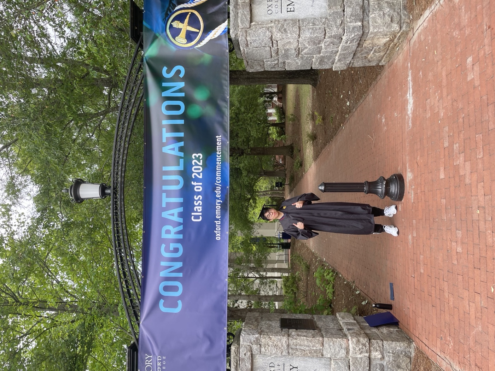

Zijian (Michael) Wang (He/Him)
AI / ML Engineer · MS Statistics at Georgia Tech
Currently at Microsoft Research, building benchmarks for how LLM agents adapt when user intent evolves. Before that, I shipped search, recommendation, and AI agent systems to production at E Closet and built agent memory at Buildsense AI.

Recent Work
IntentDelta
A benchmark testing whether tool-calling LLM agents adapt when users change their minds mid-conversation: 400+ annotated trajectories across WebShop and TravelPlanner.
Search, RecSys & Ask-e
Six-tier semantic search (31× faster deep pages), multi-centroid recommendations, reverse-image search, and a 14-tool AI shopping agent, all in production.
PaperMem
Explainable memory for AI agents: pgvector + Neo4j graph expansion. Scored 4.24/5 overall and beat a matched RAG baseline by 9.9% on faithfulness.